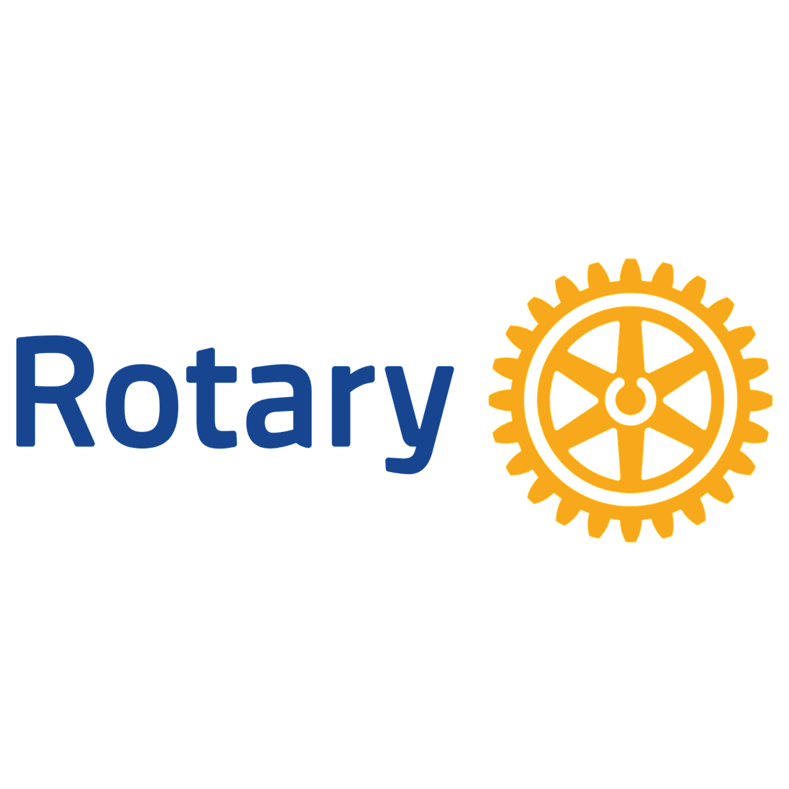
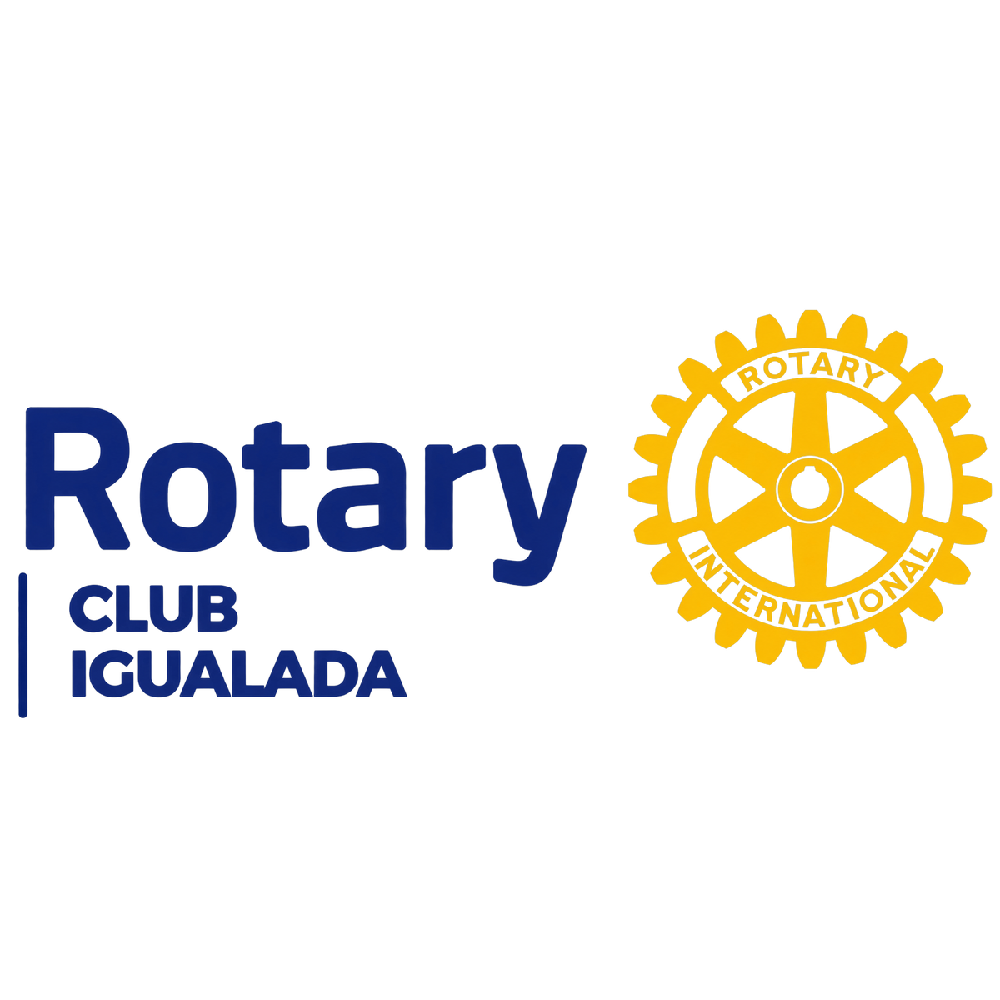
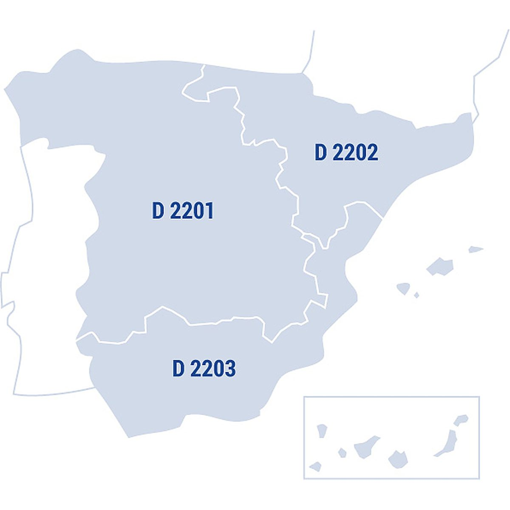
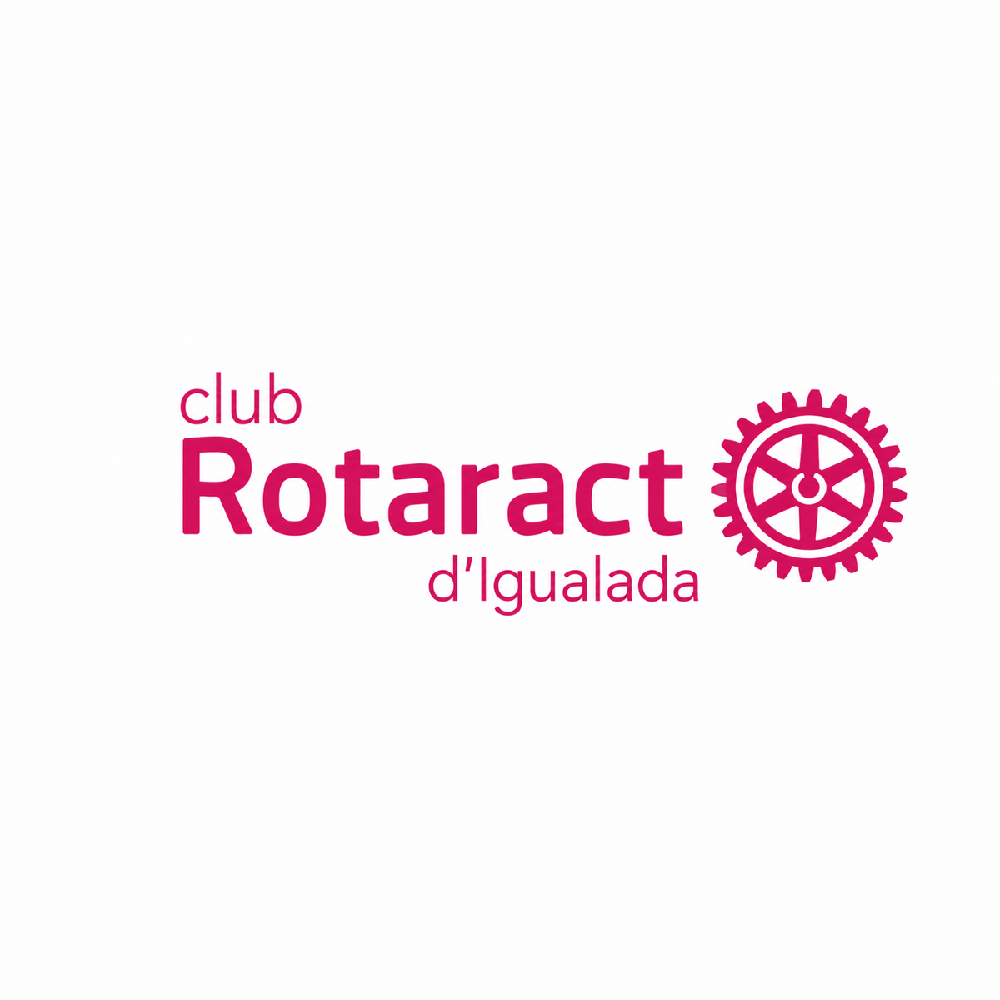
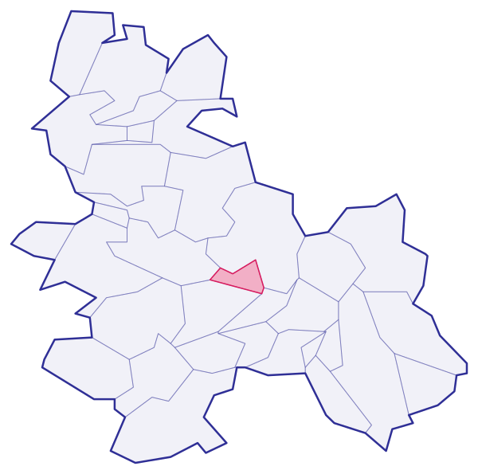

Qui som
Nosaltres
Coneix Rotaract Igualada, la nostra família Rotary i el moviment internacional del qual formem part.
Rotary Internacional
Rotary Internacional és una organització mundial de líders cívics i empresarials dedicats a la prestació d'ajut humanitari, el foment de la pau i la millora de la comprensió internacional. Fundada el 1905, agrupa més de 1,4 milions de membres en 46.000 clubs arreu del món.
Els seus pilars d'acció inclouen la promoció de la pau, la lluita contra les malalties, l'accés a l'aigua potable, la salut maternoinfantil, el suport a l'educació i el creixement de les economies locals.
Visita rotary.org →
Rotary Internacional
Rotary Igualada
El Club Rotary Igualada és el club pare del nostre Rotaract. Format per professionals i empresaris de la comarca de l'Anoia, treballa des de fa dècades en projectes locals i internacionals per millorar la vida de les persones.
La seva tasca inspira i dona suport a la nostra activitat com a Rotaract, compartint valors de servei, amistat i integritat.
Visita rotaryigualada.org →
Rotary Igualada
Rotaract Internacional
i Districte
Rotaract és una xarxa internacional de joves que volen generar un impacte positiu en el seu entorn, desenvolupar habilitats de lideratge i formar part d'una comunitat activa i compromesa. Impulsada per Rotary Internacional, compta amb més de 10.000 clubs en més de 170 països.
El nostre club pertany al Districte 2202, que agrupa els clubs Rotary i Rotaract de Cantàbria, Navarra, Euskadi (País Basc), La Rioja, Aragó i Catalunya. Al districte, els clubs Rotaract connecten joves de diferents ciutats per impulsar projectes de servei, voluntariat, formació, amistat i cooperació amb Rotary.
Contacte del Districte 2202
- @rotaract2202
- rdr.rotaract2202@rotary2202.org

Rotaract Internacional
Rotaract Igualada
El Club Rotaract Igualada neix de la voluntat d'un grup de joves de la comarca de l'Anoia de posar el seu talent i energia al servei de la comunitat. Som membres actius de la xarxa global de Rotaract i treballem per generar un impacte real al nostre entorn.
Impulsem projectes de servei, voluntariat, formació i amistat en cooperació amb Rotary Igualada, amb qui compartim els valors de servei, amistat i integritat.
Vine a descobrir qui som, què fem i com pots participar. No necessites experiència prèvia: només ganes d'aportar, aprendre i conèixer gent amb les mateixes inquietuds que tu.
Uneix-te al club (Formulari d'inscripció) →
Rotaract Igualada
Igualada, Anoia
Igualada és la capital de la comarca de l'Anoia, al centre de Catalunya i a uns 60 km de Barcelona. És la ciutat del nostre club, i des d'aquí fem projectes per a tota la comarca.
- ComarcaAnoia
- Municipis33
- ProvínciaBarcelona
Activitats del club
- Fetes0
- Properament0
Cerca qualsevol municipi de l'Anoia o toca'l al mapa per veure on és i a quina distància queda d'Igualada. Els números rosa són les activitats del club a cada lloc.

En obrir-lo es carrega des d'OpenStreetMap.